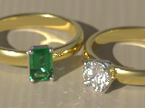

{kind=link}

 GemCuts is a library module from the Persistence of Vision Ray Tracer (POV-Ray) Object Collection that defines gem cuts and gem settings. In this initial version, the emerald and round brilliant cuts are defined, and rings with prong settings can be created.
The italicized nnnnnn in some of the file names represents the 6-digit number that is in the name of the .zip file.
| Key Files | |
|---|---|
| File | Description |
gemcuts.html |
The user manual (this document) |
gemcuts.inc |
The GemCuts software |
gemcuts.pov |
A scene description file demonstrating many of the features of GemCuts |
gemcuts.jpg |
Sample output images |
gemcuts_thumbnail.jpg |
|
gemcuts_36.ini |
An INI file to render the sample scene with POV-Ray 3.6 |
gemcuts_37.ini |
An INI file to render the sample scene with POV-Ray 3.7 or later |
gemcuts_glossary.jpg |
Illustrations for the user manual |
gemcuts_shank.jpg |
|
| Administrative Files | |
| File | Description |
READMEnnnnnn.html |
Important information about using the POV-Ray Object Collection |
gemcuts_description.txt |
A brief description of GemCuts |
gemcuts_geometry1.png |
Visualizations of some of the SDL in gemcuts.inc (These are technical diagrams for the curious, and understanding them is not required for use of the module. They assume some knowledge of analytical geometry.) |
gemcuts_geometry2.png |
|
gemcuts_geometry3.png |
|
gemcuts_geometry4.png |
|
gemcuts_keywords.txt |
A list of keywords |
gemcuts_prereqs.txt |
Prerequisites (empty file) |
gemcuts.css |
Other administrative files |
cc-LGPL-a.png |
|
Versionnnnnnn.js |
|
GemCuts requires POV-Ray version 3.6 or later. For best results with chromatic dispersion, version 3.7 or later is strongly recommended.
All file names in this module and all global and local identifiers defined in the include files comply fully with the Object Collection naming standards, as revised August 2008 and proposed August 2012. The reserved prefixes for this module are “GemCuts” and “Gem,” including any uppercase and lowercase variants. To avoid conflicts, do not introduce into your scene description file any identifiers with these names, or any identifiers that start with these names plus an underscore.
There is a macro named Gem() in Lilysoft’s SpectralRender package. At this time, GemCuts does not define any identifier by that name. In order to maintain compatibility with SpectralRender, it is suggested that future developers of GemCuts not introduce Gem as an identifier.
The standard include file shapes.inc is used by gemcuts.inc.
Include this file once prior to using any of the macros:
#include "gemcuts.inc"
Including the file more than once is harmless, though unnecessary.
POV-Ray version 3.6 may issue warnings on gemcuts.inc that patch objects are not allowed in intersections. All patch objects in gemcuts.inc are closed meshes with an inside_vector, so these warnings may be ignored.
This diagram illustrates the concepts and terminology used in this manual.
Crown and pavilion facet angles in this module are in degrees from the horizontal.
Note: Terms vary among sources.
Creates an untextured emerald cut gemstone. The short width of the gem is 1 POV unit, and the origin is at the bottom of the gem. The long axis of the gemstone is oriented in the z direction.
| Formal Parameter | Type | Description |
|---|---|---|
Ratio |
float | The ratio of the length to the width of the gemstone; this must be 1 or greater |
Table |
float | The width of the table in the shorter dimension |
Corner |
float | The x component of the width of a corner chamfer |
aCrown1 |
float | The angle in degrees of the crown facet nearest the girdle |
aCrown2 |
float | The angle in degrees of the middle crown facet |
aCrown3 |
float | The angle in degrees of the crown facet nearest the table |
aPavilion1 |
float | The angle in degrees of the pavilion facet nearest the girdle |
aPavilion2 |
float | The angle in degrees of the pavilion facet 2nd nearest to the girdle |
aPavilion3 |
float | The angle in degrees of the pavilion facet 3rd nearest to the girdle |
aPavilion4 |
float | The angle in degrees of the pavilion facet nearest the keel; use 0 if the pavilion has only 3 steps |
Girdle |
float | The thickness of the girdle |
Culet |
float | The width of the keel in the shorter dimension; use 0 if there is no keel facet |
Creates an untextured round brilliant gemstone. The diameter of the gem is 1 POV unit, and the origin is at the bottom of the gem. This macro creates a round girdle.
A non-fatal warning is issued if the arguments result in a knife-edge girdle.
| Formal Parameter | Type | Description |
|---|---|---|
Table |
float | The width of the table |
aCrown |
float | The crown angle, in degrees |
aPavilion |
float | The pavilion angle, in degrees |
Girdle |
float | The maximum thickness of the girdle |
Star |
float | The horizontal length of a star facet, in proportion to the distance from the table edge to the girdle |
Lower_girdle |
float | The horizontal length of the lower girdle facets, in proportion to the radius of the girdle |
Culet |
float | The width of the culet; use 0 if there is no culet facet |
Note: The objects created by these macros are not intended to be used with transparent materials.
Creates an untextured prong object suitable to be incorporated into a gem setting.
Warning: Gem_Prong() attempts to trace the girdle. If the girdle is variable thickness (as is the case with the round brilliant cut) and has a knife-edge or a very thin minimum thickness, there is a danger of the trace missing the girdle, causing the seat to be cut too deeply into the prong. No warning of this condition is given during the trace.
Note: Gem_Prong() is called by the setting macros. If you get a parse error from Gem_Prong(), but didn’t call it directly, then check your calls to the setting macros.
Note: Construction of the prong assumes a typical setting design. If extreme arguments—for example, a bridge that is much wider than the stone itself—are passed to Gem_Prong() or to the setting macros that call it, the prong may be clipped improperly.
| Formal Parameter | Type | Description |
|---|---|---|
Untextured_gem |
untextured object | A surrogate for the gemstone that is to be set. This object must be reasonably centered about the y-axis, and must be untextured in order to avoid an unwanted texture patch at the gem/prong interface. |
Girdle |
float | The thickness of the gemstone’s girdle |
yGirdle_max |
float | The y coordinate of the top of the gemstone’s girdle |
Base_test |
object | A simple object (e.g., a cylinder) roughly representing the bridge (base) of the setting |
yBase |
float | The y coordinate of the middle of the bridge |
R |
float | The radius of the prong |
Theta |
float | The angular position of the prong in degrees, where 0 is in the x direction and 90 is in the −z direction |
Creates an untextured gallery rail. The rail will be form-fitted to the gemstone.
Note: Gem_Rail() is called by the setting macros. If you get a parse error from Gem_Rail(), but didn’t call it directly, then check your calls to the setting macros.
| Formal Parameter | Type | Description |
|---|---|---|
Untextured_gem |
untextured object | A surrogate for the gem that is to be set. This object must be reasonably centered about the y-axis, and must be untextured in order to avoid unwanted texture patches at gem/rail contact points. |
Y |
float | The vertical position of the rail |
R |
float | The radius of the rail wire |
Type |
float | The form of the rail:
|
nPoints |
float | The number of distinct control points for the spline that defines the rail path |
Creates a scaled gem object.
An attempt is made to position the new object such that it nests with the original object.
If hPavilion is positive, the nesting will be centered at the middle of the girdle. In order for this to work properly, the culet of the gemstone must be at the origin. If hPavilion is negative or zero, the nesting will be based on the gemstone’s bounding box.
| Formal Parameter | Type | Description |
|---|---|---|
Gemstone |
object | The gemstone to be scaled |
Scale |
float or vector | The scaling factor |
hPavilion |
float | The depth of the pavilion. If the pavilion datum is an angle, it must be converted to a depth (using function Gem_fn_1Step_height(), for example) before being used as an argument. |
Girdle |
float | The maximum thickness of the girdle |
Creates an untextured prong setting with a polygonal bridge and an optional gallery rail. The prong positions are specified in an array.
The bottom of the gemstone must be at y = 0; all vertical positions are interpreted with this assumption. The gemstone must be reasonably centered about the y-axis.
| Formal Parameter | Type | Description |
|---|---|---|
Untextured_gem |
untextured object | A surrogate for the gem that is to be set. This object must be untextured in order to avoid unwanted texture patches at gem/rail contact points. |
hPavilion |
float | The depth of the pavilion. If the pavilion datum is an angle, it must be converted to a depth (using function Gem_fn_1Step_height(), for example) before being used as an argument. |
Girdle |
float | The thickness of the girdle |
Space |
float | A nominal amount of space between the gemstone and the contact points of the setting, to prevent coincident surfaces. The actual amount of space may vary over parts of the gemstone. |
Mode |
float | One of the following:
|
yBase |
float | The vertical position of the bridge |
v_Base_size |
vector | Nominal dimensions of the bridge. The actual x or z dimensions may be smaller due to polygonal clipping. |
Prongs |
array of float | The longitudinal angular positions of the prongs, in degrees, where 0 is in the x direction and 90 is in the −z direction |
dProng |
float | The diameter of the prongs |
Rail_type |
float | The form of the gallery rail:
|
yRail |
float | The vertical position of the gallery rail |
Rail_res |
float | The number of distinct control points for the spline that defines the rail path |
Creates an untextured prong setting with a polygonal bridge and an optional gallery rail. The prong positions are determined automatically.
The bottom of the gemstone must be at y = 0; all vertical positions are interpreted with this assumption. The gemstone must be reasonably centered about the y-axis.
| Formal Parameter | Type | Description |
|---|---|---|
Untextured_gem |
untextured object | A surrogate for the gem that is to be set. This object must be untextured in order to avoid unwanted texture patches at gem/rail contact points. |
hPavilion |
float | The depth of the pavilion. If the pavilion datum is an angle, it must be converted to a depth (using function Gem_fn_1Step_height(), for example) before being used as an argument. |
Girdle |
float | The thickness of the girdle |
Space |
float | A nominal amount of space between the gemstone and the contact points of the setting, to prevent coincident surfaces. The actual amount of space may vary over parts of the gemstone. |
Mode |
float | One of the following:
|
yBase |
float | The vertical position of the bridge |
v_Base_size |
vector | Nominal dimensions of the bridge. The actual x or z dimensions may be smaller due to polygonal clipping. |
nProngs |
array of float | The number of prongs |
dProng |
float | The diameter of the prongs |
Rail_type |
float | The form of the gallery rail:
|
yRail |
float | The vertical position of the gallery rail |
Rail_res |
float | The number of distinct control points for the spline that defines the rail path |
Creates an untextured prong setting with a circular or elliptical bridge and an optional gallery rail. The prong positions are specified in an array.
The bottom of the gemstone must be at y = 0; all vertical positions are interpreted with this assumption. The gemstone must be reasonably centered about the y-axis.
| Formal Parameter | Type | Description |
|---|---|---|
Untextured_gem |
untextured object | A surrogate for the gem that is to be set. This object must be untextured in order to avoid unwanted texture patches at gem/rail contact points. |
hPavilion |
float | The depth of the pavilion. If the pavilion datum is an angle, it must be converted to a depth (using function Gem_fn_1Step_height(), for example) before being used as an argument. |
Girdle |
float | The thickness of the girdle |
Space |
float | A nominal amount of space between the gemstone and the contact points of the setting, to prevent coincident surfaces. The actual amount of space may vary over parts of the gemstone. |
Mode |
float | One of the following:
|
yBase |
float | The vertical position of the bridge |
v_Base_size |
vector | The dimensions of the bridge |
Prongs |
array of float | The longitudinal angular positions of the prongs, in degrees, where 0 is in the x direction and 90 is in the −z direction |
dProng |
float | The diameter of the prongs |
Rail_type |
float | The form of the gallery rail:
|
yRail |
float | The vertical position of the gallery rail |
Rail_res |
float | The number of distinct control points for the spline that defines the rail path |
Creates an untextured prong setting with a circular or elliptical bridge and an optional gallery rail. The prong positions are determined automatically.
The bottom of the gemstone must be at y = 0; all vertical positions are interpreted with this assumption. The gemstone must be reasonably centered about the y-axis.
| Formal Parameter | Type | Description |
|---|---|---|
Untextured_gem |
untextured object | A surrogate for the gem that is to be set. This object must be untextured in order to avoid unwanted texture patches at gem/rail contact points. |
hPavilion |
float | The depth of the pavilion. If the pavilion datum is an angle, it must be converted to a depth (using function Gem_fn_1Step_height(), for example) before being used as an argument. |
Girdle |
float | The thickness of the girdle |
Space |
float | A nominal amount of space between the gemstone and the contact points of the setting, to prevent coincident surfaces. The actual amount of space may vary over parts of the gemstone. |
Mode |
float | One of the following:
|
yBase |
float | The vertical position of the bridge |
v_Base_size |
vector | The dimensions of the bridge |
nProngs |
array of float | The number of prongs |
dProng |
float | The diameter of the prongs |
Rail_type |
float | The form of the gallery rail:
|
yRail |
float | The vertical position of the gallery rail |
Rail_res |
float | The number of distinct control points for the spline that defines the rail path |
Creates an untextured ring shank. The shank is flat on the inside, curved on the outside, centered on the origin, and oriented on the x-z plane.
| Formal Parameter | Type | Description |
|---|---|---|
RInner |
float | The inner radius of the shank |
ROuter |
float | The outer radius of the shank |
Width |
float | The vertical width of the shank |
Side |
float | The width of the side of the shank |
rEdge |
float | The radius of curvature of the edges of the shank where the inner or outer surface meets with the side |
use_Sturm |
float/Boolean | Whether or not to use the slower, but more accurate Sturmian root solver |
Note: In order to avoid a POV-Ray namespace scope feature, all function arguments in gemcuts.inc begin with “gem_P” followed by a digit. In this user manual, the “gem_” prefix is omitted for clarity.
Converts a crown or pavilion main facet angle to a height or depth. The girdle diameter is assumed to be 1.
| Formal Parameter | Type | Description |
|---|---|---|
P0_Flat |
float | The width of the table (for a crown) or the culet (for a pavilion) |
P1 |
float | The angle, in degrees |
Converts 2-step crown or pavilion facet angles to a height or depth. The facet widths are assumed to have equal horizontal components. The girdle diameter is assumed to be 1.
| Formal Parameter | Type | Description |
|---|---|---|
P0_Flat |
float | The width of the table (for a crown) or the culet (for a pavilion) |
P1 |
float | The angle nearest the girdle, in degrees |
P2 |
float | The angle farthest from the girdle, in degrees |
Converts 3-step crown or pavilion facet angles to a height or depth. The facet widths are assumed to have equal horizontal components. The girdle diameter is assumed to be 1.
| Formal Parameter | Type | Description |
|---|---|---|
P0_Flat |
float | The width of the table (for a crown) or the culet (for a pavilion) |
P1 |
float | The angle nearest the girdle, in degrees |
P2 |
float | The middle angle, in degrees |
P3 |
float | The angle farthest from the girdle, in degrees |
Converts 4-step crown or pavilion facet angles to a height or depth. The facet widths are assumed to have equal horizontal components. The girdle diameter is assumed to be 1.
| Formal Parameter | Type | Description |
|---|---|---|
P0_Flat |
float | The width of the table (for a crown) or the culet (for a pavilion) |
P1 |
float | The angle nearest the girdle, in degrees |
P2 |
float | The 2nd nearest angle from the girdle, in degrees |
P3 |
float | The 3nd nearest angle from the girdle, in degrees |
P4 |
float | The angle farthest from the girdle, in degrees |
Converts a crown height to a single crown main facet angle. The girdle diameter is assumed to be 1.
| Formal Parameter | Type | Description |
|---|---|---|
P0_Table |
float | The width of the table |
P1_hCrown |
float | The crown height |
Returns a star facet length that yields a Star of Lakshmi on a round brilliant cut. The length is of the horizontal component, in proportion to the distance from the table edge to the girdle.
| Formal Parameter | Type | Description |
|---|---|---|
P0_Table |
float | The width of the table |
Converts a pavilion depth to a single pavilion main facet angle. The girdle diameter is assumed to be 1.
| Formal Parameter | Type | Description |
|---|---|---|
P0_Culet |
float | The width of the culet |
P1_dPavilion |
float | The pavilion depth |
These values were calculated assuming diamond’s index of refraction and chromatic dispersion. Other materials will use different values.
| Identifier | Type | Description | Value | Cut |
|---|---|---|---|---|
GEM_AMERICAN_CROWN |
float | An example crown angle | 34.5 | American Standard, a.k.a. Ideal Cut or Tolkowsky Brilliant |
GEM_AMERICAN_PAVILION |
float | An example pavilion angle | 40.75 | |
GEM_AMERICAN_TABLE |
float | An example table diameter | 0.530 | |
GEM_EPPLER_CROWN |
float | An example crown angle | 33.2 | Practical Fine Cut or Eppler Cut |
GEM_EPPLER_PAVILION |
float | An example pavilion angle | 40.8 | |
GEM_EPPLER_TABLE |
float | An example table diameter | 0.560 | |
GEM_EULITZ_CROWN |
float | An example crown angle | 33.6* | Eulitz Brilliant |
GEM_EULITZ_GIRDLE |
float | An example girdle thickness | 0.015† | |
GEM_EULITZ_PAVILION |
float | An example pavilion angle | 40.8* | |
GEM_EULITZ_TABLE |
float | An example table diameter | 0.565 | |
GEM_PRFINE_CROWN |
float | An example crown angle | 33.2 | Practical Fine Cut or Eppler Cut |
GEM_PRFINE_PAVILION |
float | An example pavilion angle | 40.8 | |
GEM_PRFINE_TABLE |
float | An example table diameter | 0.560 | |
GEM_IDEAL_CROWN |
float | An example crown angle | 41.1 | Ideal Brilliant (not to be confused with the American Standard) |
GEM_IDEAL_PAVILION |
float | An example pavilion angle | 38.7 | |
GEM_IDEAL_TABLE |
float | An example table diameter | 0.561 | |
GEM_PARKER_CROWN |
float | An example crown angle | 25.5 | Parker Brilliant |
GEM_PARKER_PAVILION |
float | An example pavilion angle | 40.9 | |
GEM_PARKER_TABLE |
float | An example table diameter | 0.559 | |
GEM_SCAND_CROWN |
float | An example crown angle | 34.5 | Scandinavian Standard |
GEM_SCAND_PAVILION |
float | An example pavilion angle | 40.75 | |
GEM_SCAND_TABLE |
float | An example table diameter | 0.575 | |
GEM_TOLKOWSKY_CROWN |
float | An example crown angle | 34.5 | American Standard, a.k.a. Ideal Cut or Tolkowsky Brilliant |
GEM_TOLKOWSKY_PAVILION |
float | An example pavilion angle | 40.75 | |
GEM_TOLKOWSKY_TABLE |
float | An example table diameter | 0.530 |
*Published sources give 33.36° and 40.48°, respectively, for the Eulitz crown and pavilion angles. These angles do not yield the published crown height and pavilion depth, but if the decimals are read as arc minutes, the mathematics works out. I am therefore assuming that the published sources have confused the units.
†Macro Gem_Round_brilliant() expects a maximum girdle thickness, but the Eulitz girdle value appears to be either the minimum or the average. The maximum thickness will vary depending on the other parameters, but is generally between 0.016 and 0.017 more than the minimum.
| Identifier | Type | Description | Value |
|---|---|---|---|
GEM_CLOSED |
float | A directive to create a setting with no opening in the base | * |
GEM_OPEN |
float | A directive to create a setting with an opening in the base | * |
GEM_HOLE |
float | A directive that, instead of returning a setting object, an object suitable for carving a hole that matches the would-be setting be returned | * |
GEM_CURVED |
float | A directive to create a setting with a curved gallery rail | * |
GEM_NONE |
float | A directive to create a setting with no gallery rail | * |
GEM_SEGMENTED |
float | A directive to create a setting with a gallery rail made of straight segments | * |
GEMCUTS_VERSION |
float | The GemCuts version, in case the scene file needs that information | 1.0 |
*A black box value.
Any identifiers in gemcuts.inc that are not documented in this manual are considered “private” or “protected,” and are subject to change or elimination in a future update.
| Version | Date | Notes |
|---|---|---|
| 1.0 | 2018 February 27 | The initial release:
|